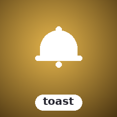

Demos.
VHS-recorded GIFs of every example shipped with the library. Regenerated automatically on every push that touches the source.

All toast types
Info / Success / Warning / Error rendered side-by-side.

Floating notification overlays
Non-blocking floating notifications that appear at the top or bottom of the terminal. Info, Success, Warning, Error types. Auto-dismiss or manual dismiss.
composer require sugarcraft/sugar-toastuse SugarCraft\Toast\{Toast, ToastType};
$toast = Toast::new('Deployment complete!', ToastType::Success);
$toast = $toast->withDuration(5000); // ms
$toast = $toast->withPosition('bottom');
// Render: outputs ANSI-styled notification string
echo $toast->render();VHS-recorded GIFs of every example shipped with the library. Regenerated automatically on every push that touches the source.